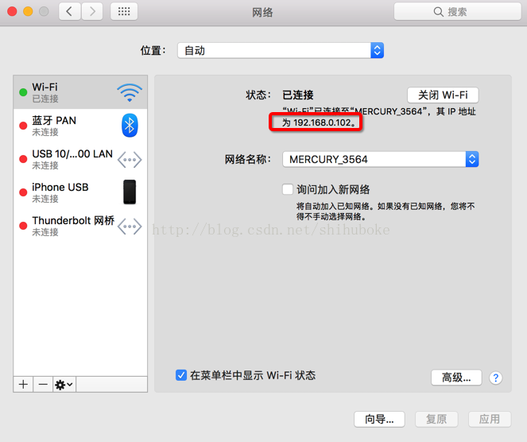
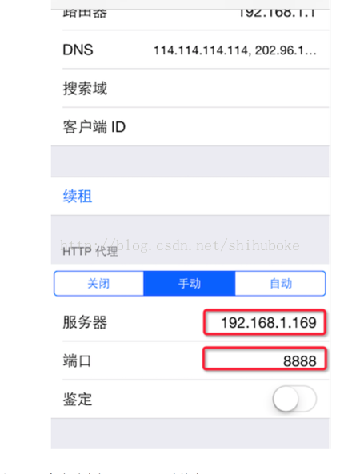
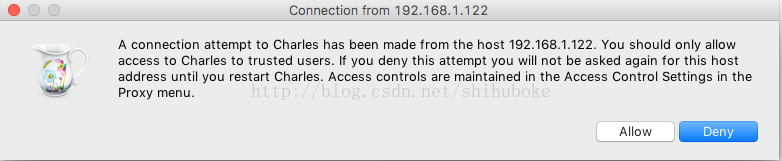
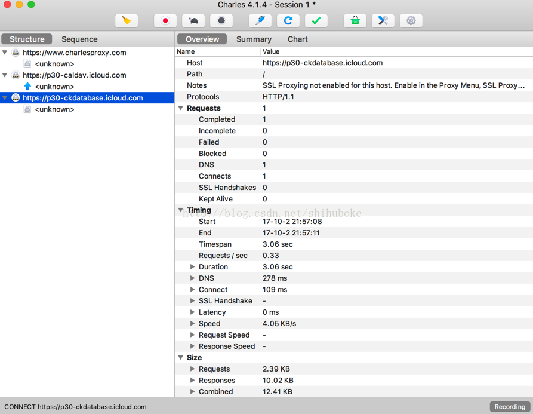

（1）查看电脑IP地址 
（2）设置手机HTTP代理
手机连上电脑，点击“设置->无线局域网->连接的WiFi”，设置HTTP代理：
服务器为电脑IP地址：如192.168.1.169
端口：8888 
设置代理后，需要在电脑上打开Charles才能上网
（3）电脑上打开Charles进行HTTP抓包
手机上打开某个App或者浏览器什么的，如果不能上网，检查前面步骤是否正确  点击“Allow”允许，出现手机的HTTP请求列表 